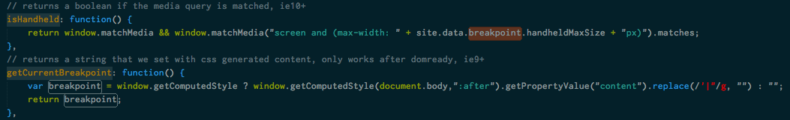
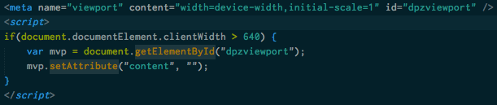

DPZ RWD
A.K.A. NOLO / A.K.A. GOLO / A.K.A. ROLO
A.K.A. Mobile Web 2.0
A.K.A. my pizza website totally shrinks on phones
what is responsive web design?
a design approach that aims to provide an optimal user experience across a wide range of device types and sizes
what is responsive web design?
- percentage-based grid
- flexible images
- media queries
why responsive web design?
- future-proof against new devices and sizes
- eliminates the need for browser detection
- single codebase to manage
- don't have to implement all of BTB's new features twice
but really, why responsive web design?
"hey, GOLO team! we need to internationalize mobile web too!"

3 week POC

concerns
- time, time, time
- do we need special cases for every different screen size?
- can we still customize experience for mobile?
constraints
- maintain the exact desktop experience
- "mobile first" best practice
- maintain legacy analytics
- performance on slower networks/weaker devices
- oh, that stupid iPad
css refactor
bem, grid
"device" targeted helper classes
conditional js

responsive, but not like, responsive responsive

ux
so, did it work?

rwd separates from the trend by $0.25 - $0.50 an order
to put that in perspective, every $0.25 move in ticket on mobile web is worth about $4 M in sales annually